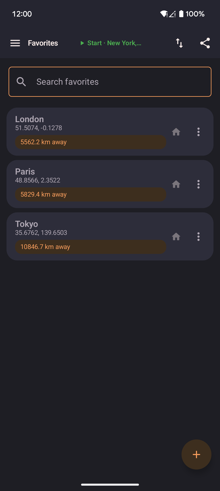
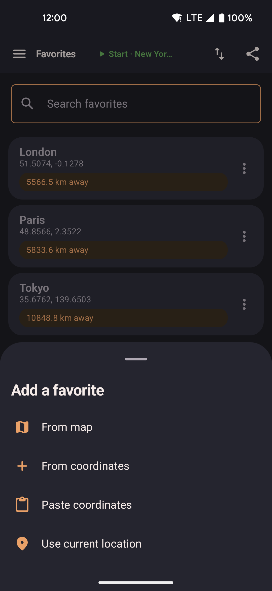

Favorites
A favorite is a named place you walk or teleport to. Favorites stay on your device. See the privacy policy. Move favorites to another phone with Backup & Transfer.
The Favorites list

- Tap a favorite to walk there (straight line or via roads) or teleport there. Teleport is hidden when Hide teleport features is on.
- Sort favorites A–Z, Z–A, newest, or oldest. The widget's favorites lists use the same order.
- Tap the house icon on a favorite to make it your Home. The app then starts there instead of your last location. Only one favorite can be Home. Tap the house again to clear it.
- The three-dot menu lets you edit a favorite, copy its coordinates, send them as a message, or delete it.
- The share button next to Sort sends your current location as decimal degrees. The widget has the same button.
Search and areas
- The search box finds favorites by name or area as you type.
- Favorites with an area are grouped under the area name. Favorites without an area are listed at the bottom.
- The map sheet and widget have the same search. Closing the list clears it.
How to add a favorite
Tap the add button at the bottom right of the Favorites screen. Pick one of these methods.

- From coordinates: type latitude and longitude in separate boxes.
- Paste coordinates: paste a pair in decimal form or degrees, minutes and seconds.
- From map: pick a point on the map.
- Use current location: save where you are now.
The paste box on the map can also save a pasted pair as a favorite.
From map
"From map" opens a full-screen map. Tap to place a pin, or search for a place by name. The search uses an external service.
- Search by place name to move the map to an address or landmark.
- Tap the map to move the pin to an exact spot.
- Confirm to save the pin with a name.
Hot locations
In Settings, turn on Show hot locations to add popular places around the world to your favorites. They include cities, parks, and landmarks. This is off by default.
- Turning it off removes only the entries this feature added. Your own favorites stay.
- Each hot location uses its country as its area name.
- The list updates online. Places that are removed disappear from your favorites while this is on.